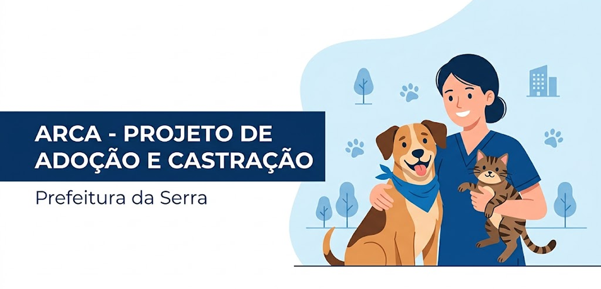

1
Conteúdo
2
Menu
3
Busca
4
Contraste
5
Acessibilidade
PROJETO
ARCA
Adoção
Castração
Como funciona
Agendar Castração
Clínicas credenciadas
Denúncia
Resgate
Fale Conosco
Perfil

Faça parte dessa
mudança!
Cadastrar abrigo
Adotar agora
Animais disponíveis para adoção
André
🐾
Bom lar
📍
Osasco
Adotar
🤍
Sobre o animal
André
🐾
Bom lar
📍
Osasco
Adotar
🤍
Sobre o animal
André
🐾
Bom lar
📍
Osasco
Adotar
🤍
Sobre o animal
Confira todos os nossos animais
Conferir animais